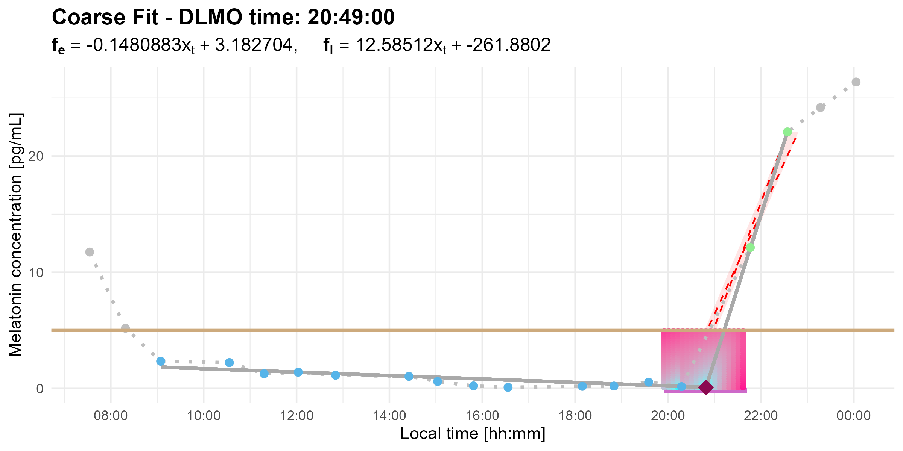
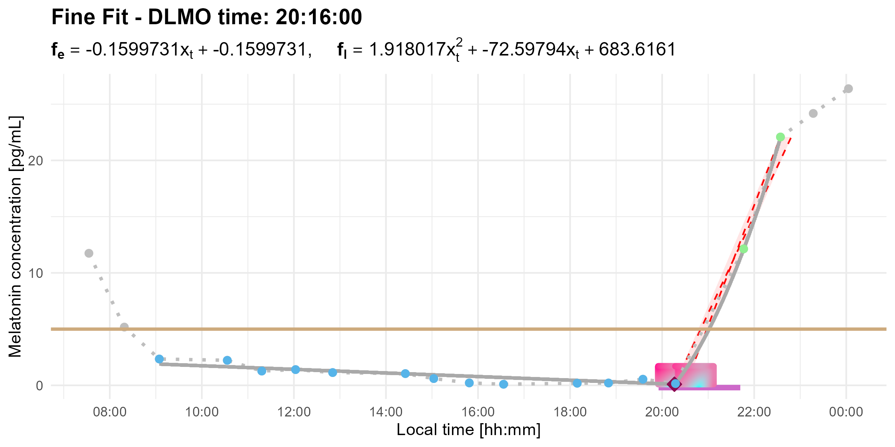

dlmoR
dlmoR is an R package that implements the hockey-stick method (Danilenko et al., 2014) for estimating dim light melatonin onset (DLMO) — a key circadian phase marker in chronobiology and sleep research.
The hockey-stick algorithm models melatonin rise as a piecewise linear-parabolic curve, with the DLMO time point determined as the inflection point of the piecewise curve that best fits the melatonin profile, in a least-squares sense. This approach provides a more objective and robust estimate of DLMO compared to traditional threshold-based methods, which can be limited by variability in baseline melatonin levels and subjectivity in visual estimation (Benloucif et al., 2008; Kennaway, 2023; Glacet et al., 2023).
A Windows-based executable of this algorithm was previously released (Danilenko & Verevkin, 2020), but its closed-source format limits flexibility. The original software does not allow modification or inspection of the underlying algorithm, lacks an API for integration into analytical workflows, and requires manual operation, making batch processing inefficient.
By bringing this method into the R-programming environment, dlmoR provides an open-source, transparent, and scriptable alternative. It enables reproducible and batchable DLMO estimation, allowing users to efficiently analyze multiple melatonin time-series within high-throughput workflows.
Installation
You can install the latest development version of dlmoR from GitHub with:
# install.packages("pak")
pak::pak("tscnlab/dlmoR")Example
This is a simple example that illustrates how to use dlmoR. For a more detailed walkthrough, see the Get started vignette.
# Load the package
library(dlmoR)
# Load sample data (provided with the package)
filename <- system.file("extdata/sample_melatonin_profile.csv", package = "dlmoR")
# Compute DLMO with a threshold of 3 pg/mL
dlmo_result <- calculate_dlmo(file_path = filename, threshold = 3, fine_flag = TRUE)
# View estimated DLMO inflection point (decimal-hours) and melatonin concentration (pg/mL) at this time
# Coarse grid search result
dlmo_result$ip$inflection_point_coarse
# x y
10 20.81667 0.1
# Fine grid search result
dlmo_result$ip$inflection_point_fine
# x y
36 20.26667 0.1
# View estimated DLMO timestamp for fine search
dlmo_result$dlmo$fine$time
20:16:00
# View estimated melatonin concentration at DLMO time
dlmo_result$dlmo$fine$fit_melatonin
0.1
# View parameters of fit lines
# Baseline fit type is always linear: slope m, y-intercept b
dlmo_result$dlmo$fine$fit_lines$base
[1] "linear"
dlmo_result$dlmo$fine$fit_lines$base$m
[1] -0.1599731
dlmo_result$dlmo$fine$fit_lines$base$b
[1] 3.342121
# Ascending fit type is either linear or parabolic.
dlmo_result$dlmo$fine$fit_lines$ascending$type
[1] "parabolic"
dlmo_result$dlmo$fine$fit_lines$ascending$a
1.918017
dlmo_result$dlmo$fine$fit_lines$ascending$b
-72.59794
dlmo_result$dlmo$fine$fit_lines$ascending$c
683.6161
# Plot the melatonin profile with DLMO detection
print(dlmo_result$dlmoplotcoarse)
print(dlmo_result$dlmoplotfine)Dim-Light Melatonin Onset (DLMO) Plot (coarse grid search view)

Dim-Light Melatonin Onset (reduced fine grid search view)

Expected runtime
Runtime depends on the selected search and your machine:
-
Coarse- + Fine-grid DLMO search (
fine_flag = TRUE, default): ~10 min (Windows) / ~2 min (Mac) per profile
-
Coarse-grid DLMO search only (
fine_flag = FALSE): ~1 min (Windows) / <1 min (Mac) per profile
For exploratory work, we recommend running fine_flag = FALSE first, then re-running promising profiles with fine_flag = TRUE. For batch processing, runtime scales approximately linearly with the number of profiles analyzed. Parallelization (e.g., using future.apply, furrr, or an HPC scheduler) can substantially reduce wall-clock time in high-throughput settings but is not required.
Getting Help
For bug reports, usage questions, and feature requests, please open an issue on the GitHub Issues page.
Citing dlmoR
If you use dlmoR in your research, please cite the following preprint, (forthcoming in Journal of Biological Rhythms; citation will be updated upon publication) which describes the package and its implementation and provides a systematic evaluation of the hockey-stick DLMO method and its software behavior:
Thalji, S. M., & Spitschan, M. (2026). dlmoR: An Open-Source R Package for the Dim-Light Melatonin Onset (DLMO) Hockey-Stick Method. Journal of Biological Rhythms, 41(3), 301–323.
```bibtex @article{thalji2026dlmor, author = {Thalji, Salma M. and Spitschan, Manuel}, title = {dlmoR: An open-source R package for the dim-light melatonin onset (DLMO) hockey-stick method}, journal = {Journal of Biological Rhythms}, year = {2026}, doi = {10.1177/07487304251389994} }
Data and analysis code availability
All raw data, analysis code, result tables, and figures related to this publication are available in the corresponding publication repository.